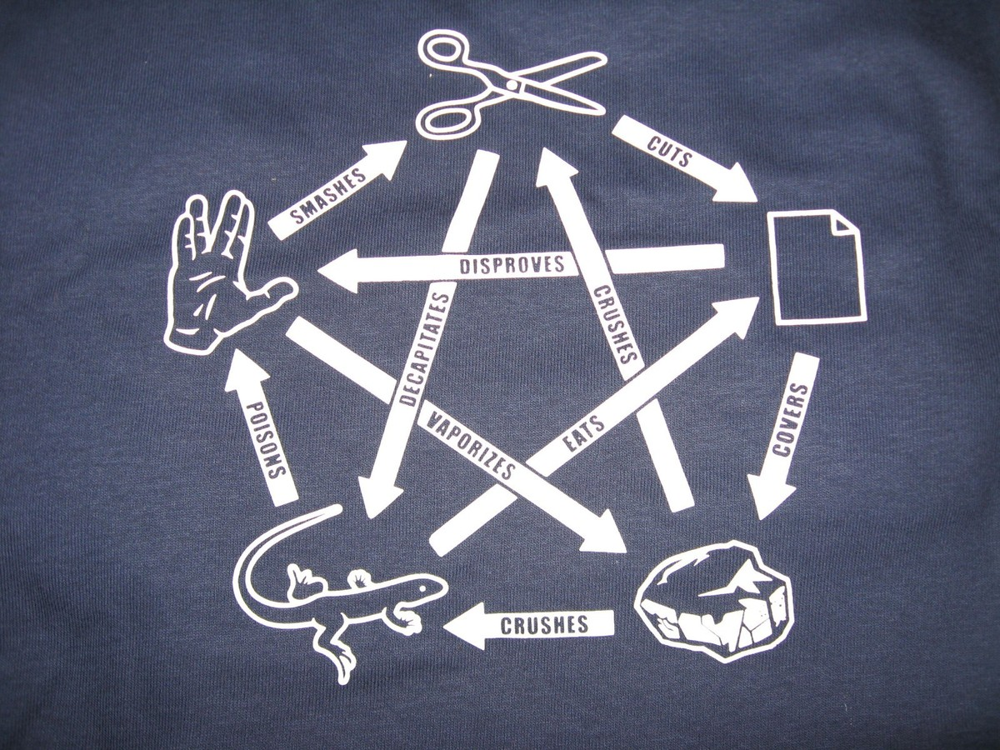

Rock Paper Scissors Lizard Spock is an expansion of the classic Rock Paper Scissors game. Instead of three choices, players can choose from five options: Rock, Paper, Scissors, Lizard, or Spock.
Each option defeats two others and is defeated by two others.
Winning relationships:
Players choose one option. The computer randomly selects another option. The winner is the first one to reach 10 points which are determined by the relationships listed above.